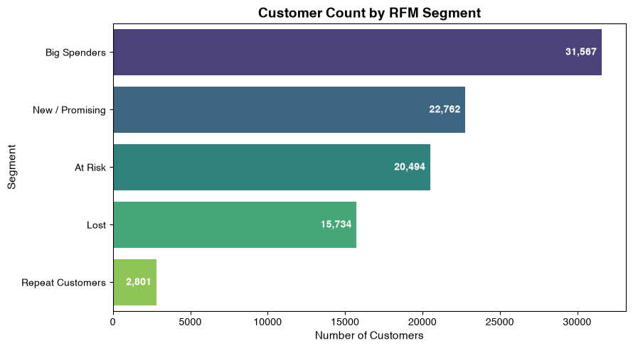
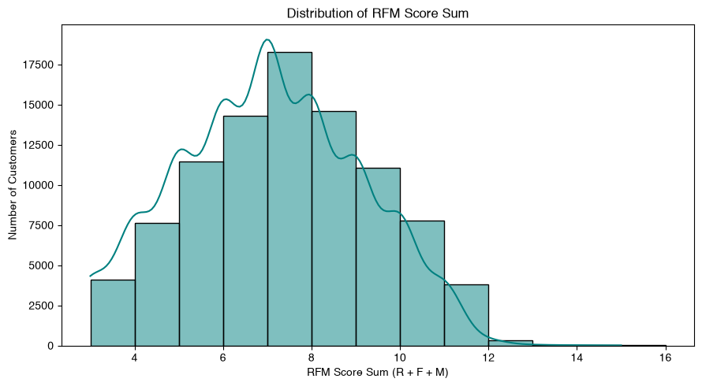
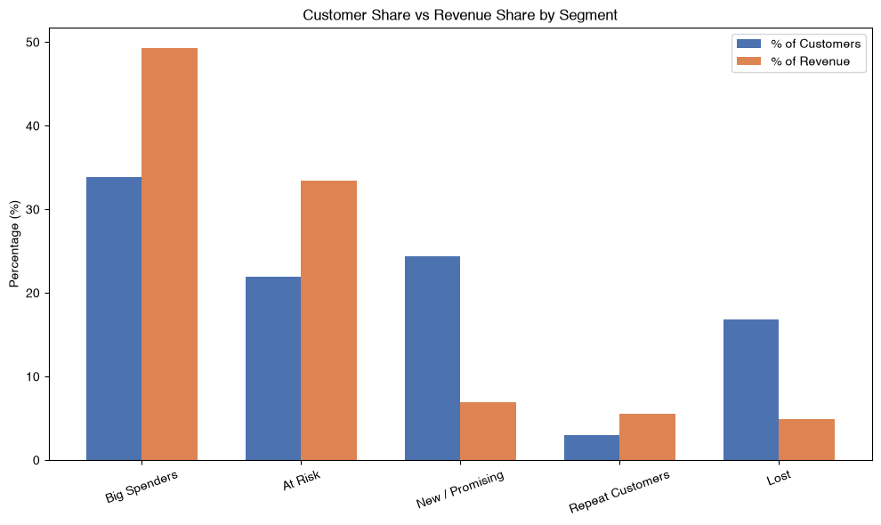
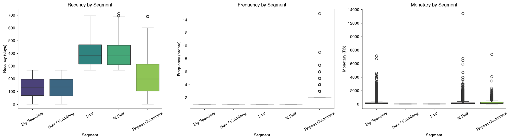

Data analytics case study
A full pipeline — MySQL, Python, and interactive visualization — built to answer one question: which customers actually drive an e-commerce business's revenue, and what should be done about the rest?
Overview
RFM (Recency, Frequency, Monetary) is a customer segmentation framework built on three behavioral signals: how recently a customer last ordered, how often they order, and how much they spend. This project applies it end-to-end to 93,358 real customers from the Brazilian E-Commerce Public Dataset by Olist — a multi-table dataset chosen specifically because it required genuine relational joins across orders, customers, products, and sellers, rather than a single flat CSV.
The pipeline runs from raw data through a production-style MySQL star schema, custom RFM scoring logic in Python, five behaviorally distinct customer segments, and a full interactive visualization suite — ending in a concrete, data-backed retention strategy.
Methodology
Olist's raw CSVs loaded into MySQL and joined into a star schema — order_items as the fact
table at line-item grain, with dim_customers, dim_products, and
dim_sellers as dimension tables. The base RFM dataset was pulled via a 3-table SQL join,
filtered to delivered orders only.
Recency and Monetary were scored using quantile binning (pd.qcut). Frequency required a
different approach: with ~97% of customers being one-time buyers, quantile scoring collapses into
meaningless buckets — so Frequency was manually bucketed instead (1→1, 2→2, 3→3, 4→4, 5+→5).
Customers were placed into five segments using R×M quadrant logic, with Frequency acting as an override flag for genuine repeat buyers — turning three separate scores into one clear behavioral label per customer.
Segment sizes, R/F/M distributions, score distribution, and — most importantly — revenue concentration by segment, translated into a concrete, segment-specific retention strategy.
Segments
Each bar compares a segment's share of the customer base against its share of total revenue — the gap between the two bars is the entire business case.
High recency and high monetary value — the single largest revenue block.
Recommendation: VIP / loyalty program to prevent slippage into At Risk over time.
High historical spend, but recency has dropped — proven value gone quiet.
Recommendation: highest-ROI recovery target — targeted win-back campaigns before full churn.
Recent purchasers with low monetary value so far — unproven, not disqualified.
Recommendation: conversion play — onboarding sequences and second-purchase incentives.
The frequency-override segment — small, but genuinely proven repeat buyers.
Recommendation: study what drives their repeat behavior and replicate it into New/Promising.
Low recency, low monetary value.
Recommendation: lowest priority — light-touch, low-cost reactivation only.
Visualizations




Days since each customer's last order, grouped by segment. Interactive — zoom and hover for exact values.
Distinct order count per customer. Zoom in on non-Repeat segments — they're flat at a frequency of 1 due to the dataset's ~97% one-time-buyer skew, confirmed as real data behavior rather than a rendering artifact.
Total spend per customer, log-scaled due to high-spend outliers, grouped by segment.
Business interpretation
Segment size and segment value are not aligned — retention strategy should follow revenue, not headcount.
Proven high-value customers who've gone quiet. Highest-ROI recovery target on the list — win them back before they fully churn.
Currently the top revenue driver, but at risk of slippage without a reason to stay. A loyalty program locks in the relationship.
Largest segment by headcount, smallest by revenue. Needs onboarding and second-purchase incentives, not retention spend.
Low value, low recency. Light-touch reactivation only — resources are better spent recovering At Risk customers.